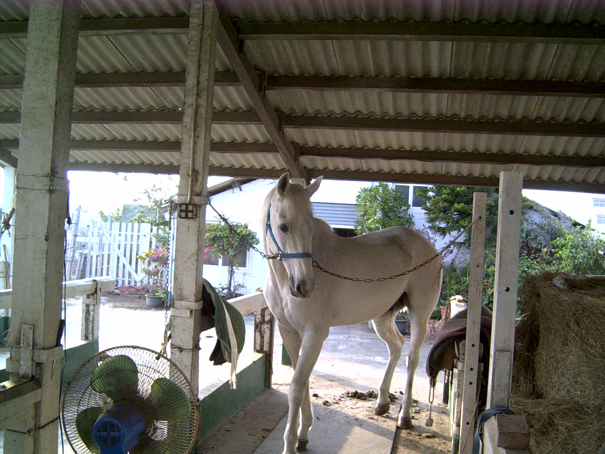
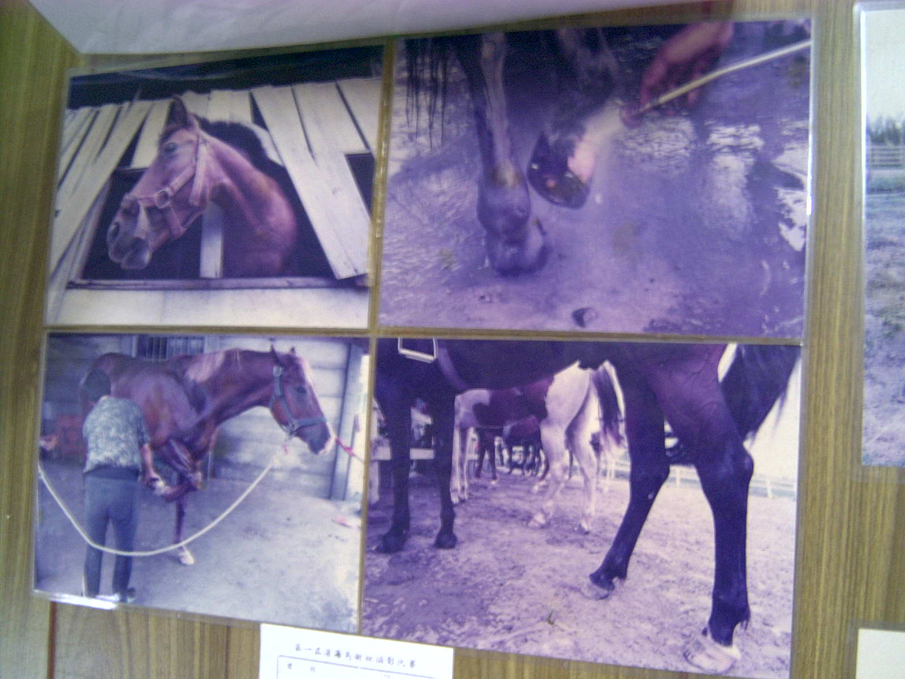
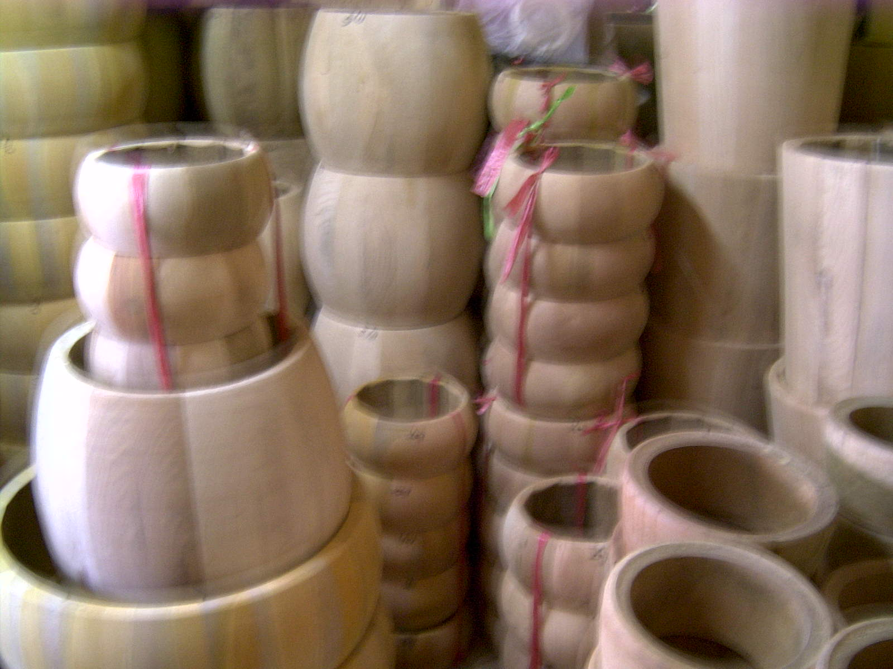
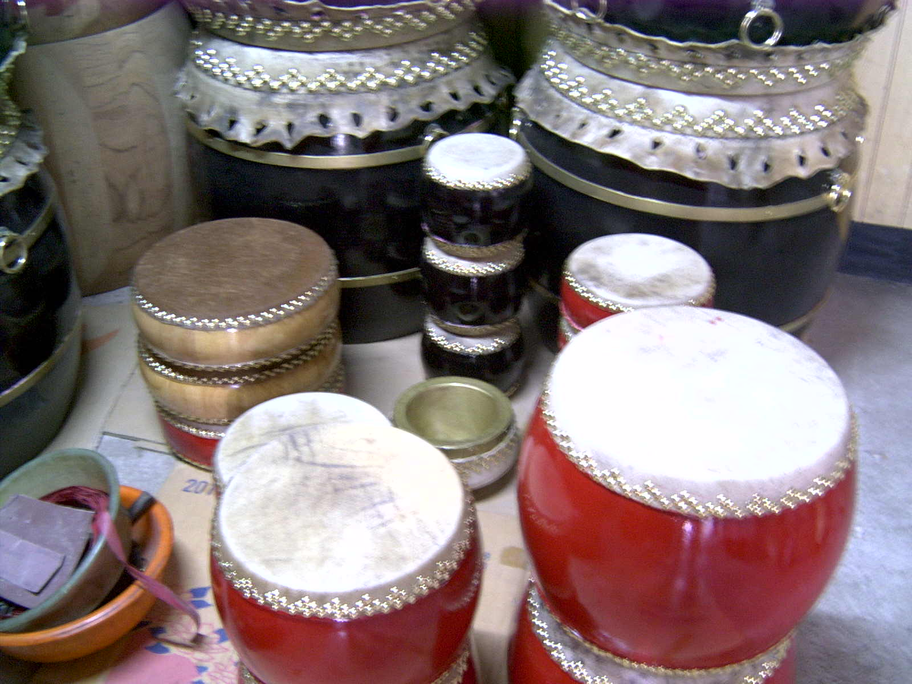

|
|
|
(一)彰濱肉粽角沙灘聞名遐邇，如果不知就太遜了。位於彰濱工業區西側，為一未開發之海灘，因其海濱之消波塊狀似肉粽，故稱為肉粽角，沙灘乾淨海水清澈見底，假日總是吸引無數青年男女來此約會、休閒、戲水。但此地尚待規劃開發為海洋公園。目前無人管理及缺乏救生員。（摘選自“線西鄉全球資訊網“）
(一)在離海濱不遠的地方有一座塭仔漁港，是漁民出入討海捕魚的碼頭，每到漁船返港也是滿載漁獲歸來時，魚市場就開始熱鬧起來，有新鮮海產叫賣聲，有遊客、饕客的讚笑聲，而且可以品嚐海鮮，眺望晚歸漁船點點，燈火處，漁夫歸，夠詩情畫意吧！（摘選自“第九期線西鄉訊季刊“）
(一)享受騎馬野外騎乘那份瀟灑自在的帥氣，是大多數民眾所嚮往的休閒活動，來到彰化縣靠海的線西鄉，走在綿亙的沙灘上，經常可看見民眾騎馬漫步、馳騁在海邊，正在品味野外騎乘的樂趣。
 
(一)騎馬是高貴不貴的運動，擁有貴族班高尚享受，是上流社會獨有的優越感，從上鞍、套韁、漫步、輕快步道隨意駕馭奔馳，來到線西阿鉗馬場令你充分享受田園風光，海邊景緻，體會不同凡響的騎士風格。(摘選自“第九期線西鄉訊季刊“)
(一)位於線西最北邊的頂庄村有一間廟宇，很少有人會去注意，尤其是年輕人。也許是台灣民間廟宇太多了，沒有人會去專注這其中發生的故事及由來。 (二) 這座廟宇看來不大，建於兩墓之間，偶而有香客前來上香，不過大多是附近鄉民農閒時，大夥到廟口喝茶談天之地。聽當地老者談起該座廟的故事，源於明末鄭成功率眾台，其中一將領姓程名忠權號壯熊，率領另一支部隊，欲登陸台灣即為現今線西沿海，因不黯地形，又遭遇風浪，不幸全軍覆沒，慘遭滅頂。登陸失敗，官兵全數葬身海底，遂飄流至岸邊，由當地鄉民合力安葬於此地。 (三)早期居民生活艱苦，有帶疾苦上香者，傳言有求必應，因而一傳十，十傳百，香火日漸興旺，更有鄉民夜裡偶有聽到千軍萬馬的雜踏聲，莫不爭相走告。 (四)根據前輩傳說，以往出海捕魚的漁民，入夜之後容易迷失方向，此時只要漁民 口「大將爺公」聖號，必可見眼前出現一團火花，引導前行，安全返家，沿海各村漁民為了感念大將爺公的庇佑，屢次擴建廟宇以光聖恩。(摘選自“線西鄉社區網站“)
(一)位於線西鄉溝內村的「永安鼓坊」如今已傳到第三代黃爐，黃呈豐兄弟，製鼓工作是傳統民俗技藝，製作過程是件苦差事，如果沒有興趣投入，恐怕做不會太久。 (二)由於製作皮鼓一切仰賴老天爺臉色，天乾物燥易成型，但是下雨易受潮濕腐壞，所以製鼓人家對夏日天氣又愛又恨，尤其是晴時多雲偶陣雨的天氣，因無法掌握天氣瞬息萬變的動態，所以一般製鼓成本的高低往往受制於天候的影響。 (三)「永安鼓坊」承製各種用途牛皮鼓，製作過程從選毛、削毛、拉皮、晒皮、封皮等作業也都要靠經驗與技巧，方能製作出「好鼓」來。牛皮鼓怕潮濕，一個好鼓至少可用十年，如果在製作過程中鼓皮被濺到水，鼓的壽命可能只剩五、六年。 (四) 製鼓的牛皮通常以牛小皮為上品，採購牛皮也要挑個好天氣，所以有經驗的製鼓師每天都會收看氣象報告，未來幾天如果都是晴朗的好天氣，就得趕快外出辦貨，趁著有陽光的天氣趕快進行「拉皮」和「晒皮」作業，等牛皮乾燥成型，放在室內風乾，下雨時不必擔心沒有材料製鼓。(摘選自“第九期線西鄉訊季刊“)
  |